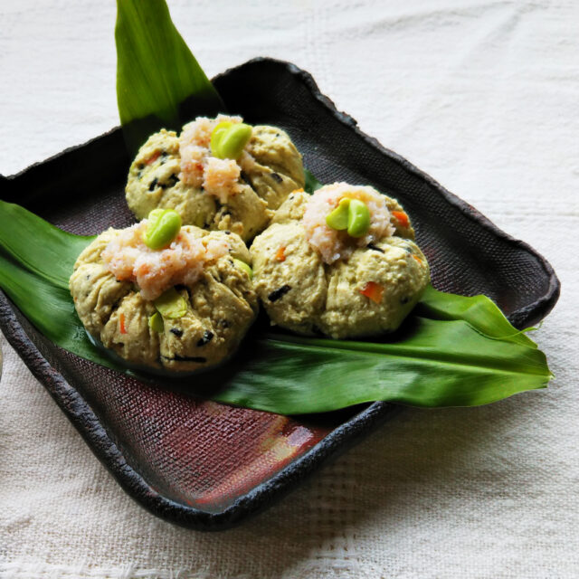

2023年初の投稿は和のレシピをお届け！
月桃パウダーの風味がアクセントになった
あっさりヘルシーなお豆腐レシピ♪
かに身入りでおもてなし料理にもぴったりな
豆腐巾着のレシピです。
材料
| 木綿豆腐 ３００ｇ | ＜タレ＞ |
| むき枝豆 ２０～３０粒 | B：水 ５０ｃｃ |
| 月桃パウダー 小さじ２ | B：白だし・醤油・みりん 各小さじ１ |
| 片栗粉 小さじ1と1/2 ＋水 大さじ１ | |
| A：人参 ２ｃｍ | |
| A：乾燥ひじき ３ｇ | |
| A：シイタケ 1枚 | |
| A：だし汁 大さじ１ | |
| A：醤油・酒 みりん 各小さじ１ |
作り方
1.木綿豆腐をつぶし、月桃パウダーと枝豆を加える。（※枝豆は飾り用を少し残しておく）
2.みじん切りしたAの材料と調味料と合わせたら、５００ｗのレンジで３０秒加熱する。
3.②にかに缶のほぐし身と片栗粉小さじ２を加えて、よく混ぜ合わせる。
4.４等分にしてラップ包み、巾着状に形を整えたら輪ゴムで口を閉じる。
5.６０℃のお湯に中に入れ、沸騰させないように２０～３０分加熱し、鍋の中で冷ます。
6.小鍋でBの材料を入れて加熱する。水溶き片栗粉を加えてとろみをつけ、冷ましておく。
7.⑤が冷めたらラップを外して皿に盛り、タレを回しかけてカニの身と枝豆を飾る。

※レシピの無断転載等は固くお断りさせて頂きます。